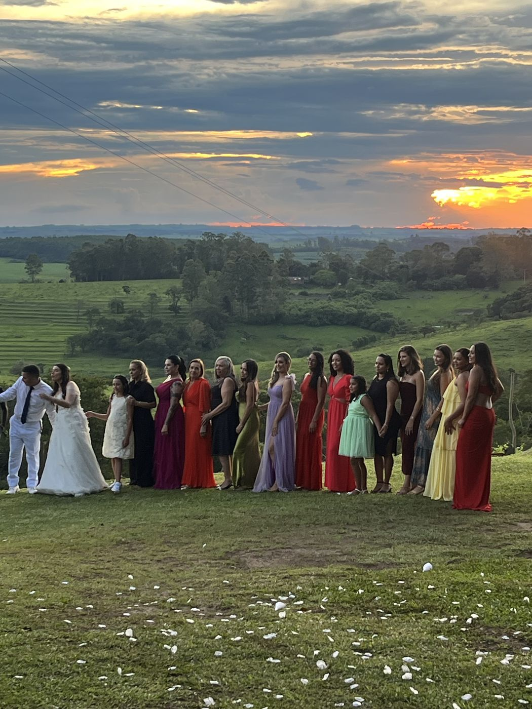
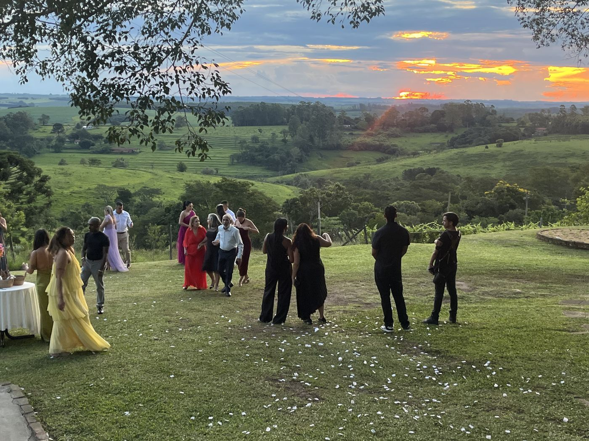
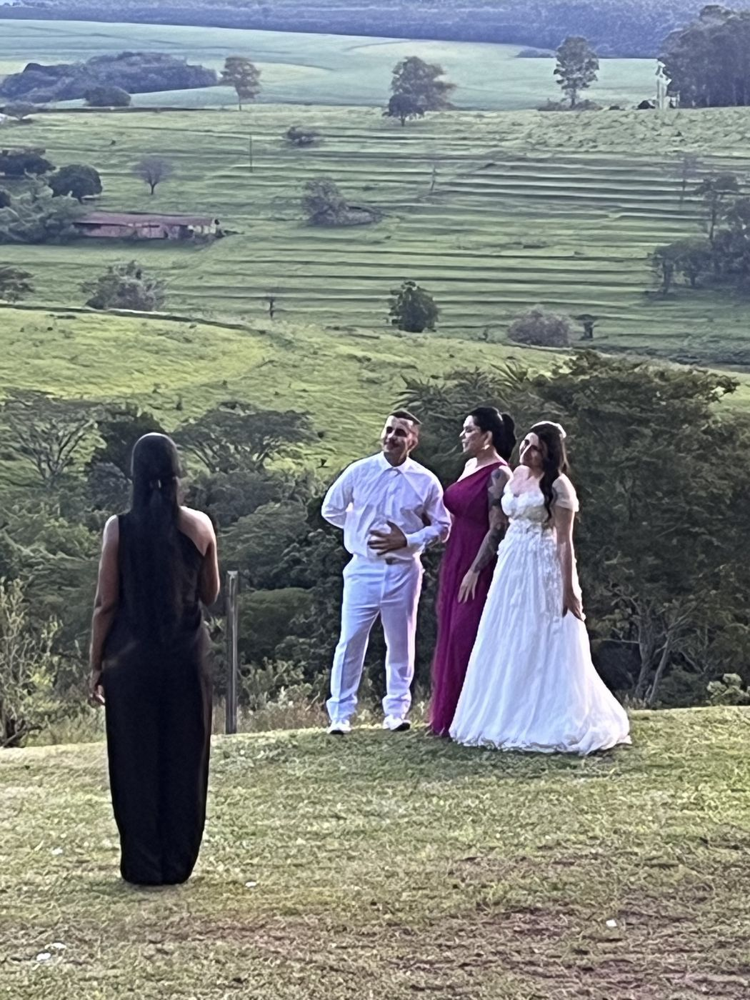
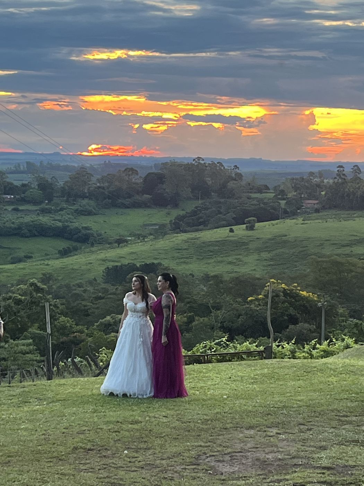
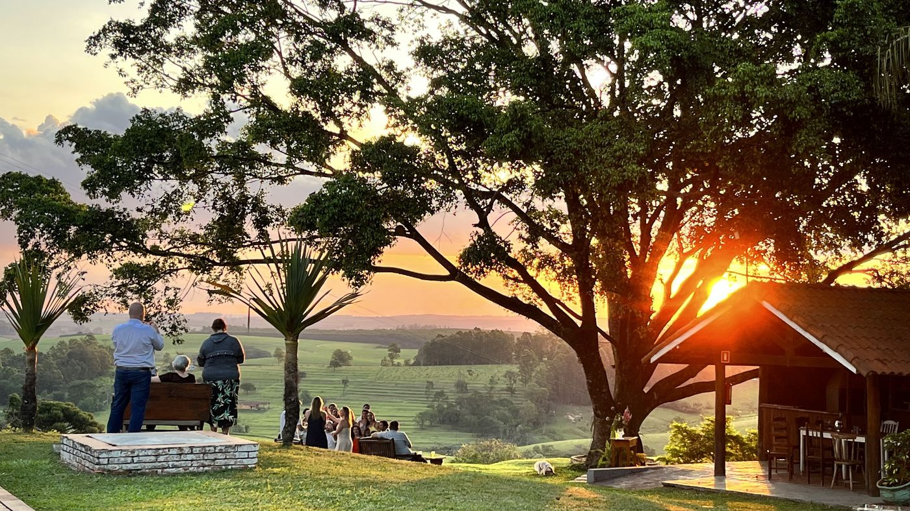
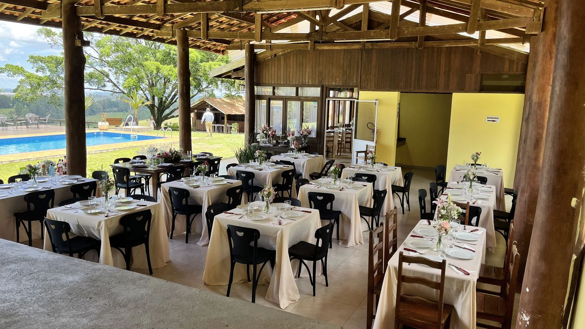
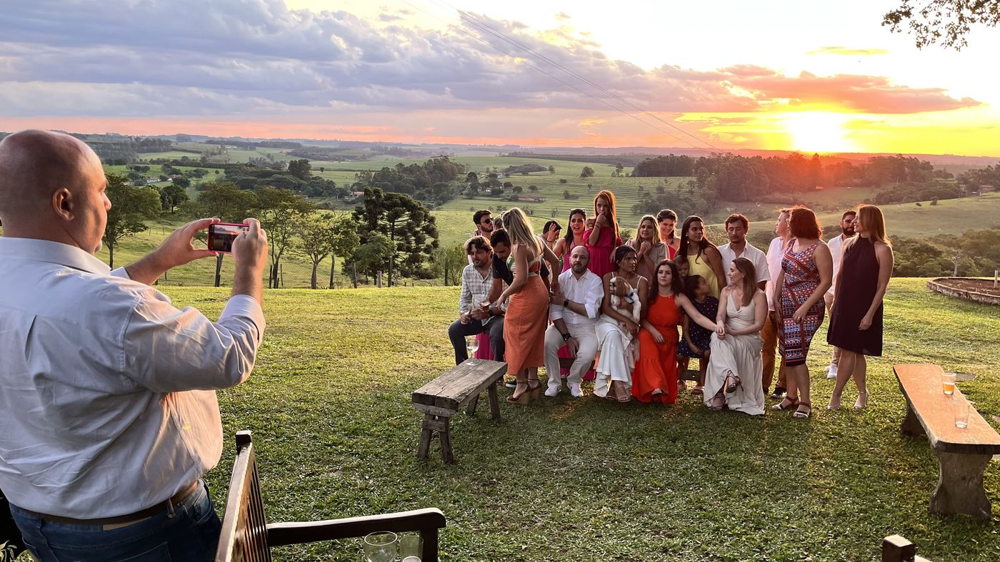
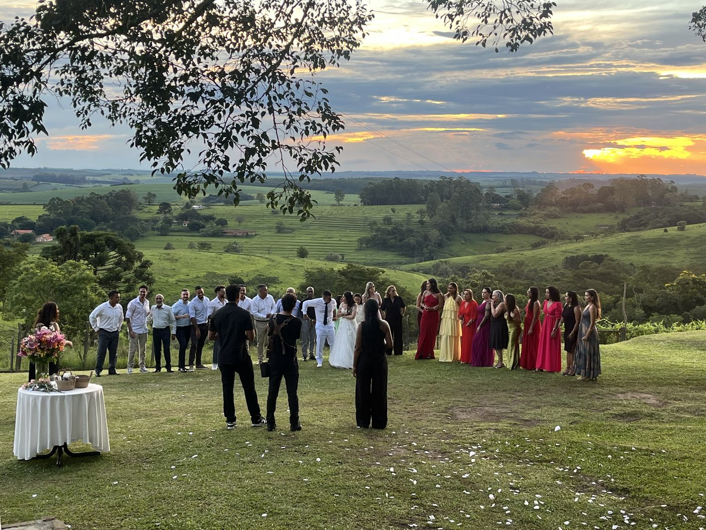

Registros
Eventos reais no Recanto









Casamentos intimistas, confraternizações, aniversários e encontros para até 80 pessoas — sob a figueira do Recanto, na Serra do Itaqueri.
Solicitar propostaA cerimônia acontece ao ar livre, no gramado, sob os galhos amplos da figueira-benjamim (Ficus benjamina) que coroa o Recanto. Os convidados se acomodam em bancos de madeira, a noiva caminha sobre a grama, e o vale da Serra do Itaqueri serve de pano de fundo natural — sem cenografia adicional.
O entardecer joga a favor: a luz dourada bate no horizonte na altura da cerimônia, e o pôr do sol acontece durante o brinde. É o tipo de ambientação que dispensa decoração pesada.
Ponto de referência do Recanto — sombra generosa e moldura natural para a cerimônia.
Vale da Serra do Itaqueri ao fundo, a 990m de altitude. Pôr do sol coincide com a cerimônia.
Técnica argentina, cortes selecionados — brasileiros e argentinos. Operada durante o evento.
Hospedagem para até 12 convidados próximos. Varanda privativa e vista deslumbrante.







Recebemos regularmente confraternizações, reuniões e celebrações para até 80 pessoas ao ar livre. Para eventos com hospedagem exclusiva, as 6 suítes acomodam até 12 hóspedes — ideal para o casal e familiares próximos. Para grupos maiores, articulamos hospedagem complementar nas pousadas vizinhas.
Cada proposta é personalizada: cerimônia + jantar, day-use, retiro estendido, confraternização corporativa. A parrilla opera para o evento e a gastronomia é montada conforme o número de convidados.
Cerimônia sob a Árvore, brinde no gramado, jantar harmonizado — sem distrações urbanas.
Almoço ou jantar para grupos médios, com a parrilla operando e o vale como cenário.
Imersões de equipe, integração, planejamento. Day-use para grupos maiores ou retiro com hospedagem.
Reuniões intergeracionais com espaço aberto, parrilla, café da manhã artesanal e 6 suítes.
O Recanto pode receber o evento e hospedar os convidados próximos nas 6 suítes — varanda privativa, café da manhã artesanal e vista deslumbrante. Ideal para casais que querem prolongar a celebração.
Conhecer a pousadaCada evento é único. Envie uma mensagem com a data, número de convidados e tipo de celebração — preparamos uma proposta personalizada.
Solicitar proposta pelo WhatsApp